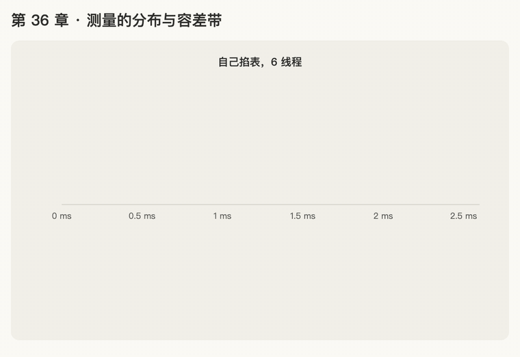

第 36 章 · benchmark 与正确性：测准、对齐、再上线
本地运行
git clone https://github.com/wikieden/pytorch-inside-out
cd pytorch-inside-out/code/notebooks
pip install jupyterlab torch numpy
jupyter lab ch36_bench_correctness.ipynb也可以下载后直接用 VS Code 打开 .ipynb 运行。需要 GPU 的章节在 Colab 里选「代码执行程序 → 更改运行时类型 → GPU」。
本章回答：怎么测一个 kernel 的时间才算数？有效带宽怎么算、怎么判断离上限多远？一个新 kernel 要怎么测才敢替换原来的实现？
assert_close的容差是多少，低精度时怎么设？
讲解日期：2026-11-15 · 上一章：第 35 章 量化与导出 · 下一章：无（全书完）
对应原文：官方文档torch.utils.benchmark、torch.testing.assert_close、Reproducibility（〔在线〕）；Tritontriton.testing.do_bench（〔在线〕）；AISPE ch13「持续集成和性能基准测试」（ch13.md第 1620–1691 行）；本讲义 第 5 章、第 29 章；本章计时和容差都是本机 torch 2.15.0 实测本章缩写：IQR = InterQuartile Range（四分位距：中间 50% 数据的范围，衡量波动）；rtol / atol = relative / absolute tolerance（相对 / 绝对 容差）；CI = Continuous Integration（持续集成）；全部缩写见 附录 · 缩写与术语表
讲解
第一步：测时间的四个坑（2026-11-15）
实测：torch.relu(x + y)，\(2^{22}\) 个 float32，本机 CPU，自己用 perf_counter 掐表 31 次：
| 时间 | |
|---|---|
| 第 1 次 | 2.43 ms |
| 之后 30 次的中位数 | 0.42 ms |
| 最快 / 最慢 | 0.37 / 0.65 ms |
再用 torch.utils.benchmark.Timer(...).blocked_autorange() 测：中位数 0.70 ms，旁边写着 "1 thread"。
四个坑全在这里：
| 坑 | 表现 | 对策 |
|---|---|---|
| 没热身 | 第一次慢 6 倍（分配内存、加载 kernel、编译、缓存冷） | 先跑几次再计时 |
| 没同步（GPU） | 只测到下单时间（第 5 章，0.15 ms vs 10.2 ms） | 计时前后 synchronize()，或用 CUDA Event |
| 只测一次 | 波动可达 ±50% | 测多次取中位数，看 IQR |
| 线程数不一致 | benchmark.Timer 默认 num_threads=1，而直接跑用了 6 个线程，差 1.7 倍 |
比较时明确设成一样（Timer(..., num_threads=torch.get_num_threads())） |
GPU 上最省事：triton.testing.do_bench(fn)，它自动热身、同步、清 L2 缓存（不然第二次读同一块数据会命中缓存、测得虚快）、取分位数。
一句话：热身、同步、多次取中位数、线程数一致；GPU 上用 do_bench（还会清缓存）。
第二步：有效带宽——知道离上限多远（2026-11-15）
光有时间不知道好坏。第 29 章说访存受限的 kernel 用有效带宽衡量：
数字演示：上面的 relu(x + y) 必须读 x、y，写结果：\(3 \times 2^{22} \times 4\) 字节 = 50.3 MB。
| 测法 | 时间 | 有效带宽 |
|---|---|---|
| benchmark.Timer（1 线程） | 0.70 ms | 72 GB/s |
| 6 线程中位数 | 0.42 ms | 120 GB/s |
和硬件上限比（本机内存带宽约 400+ GB/s，第 29 章 MPS 实测达到 471 GB/s），CPU 单线程只用了不到 20%。GPU 上的好 kernel 通常能到峰值带宽的 80–90%。
注意分子是"必须读写的字节"，不是 kernel 实际读写的：如果 kernel 多读了一遍中间结果，有效带宽就低，正好暴露问题。算力受限的 kernel 改用"有效 FLOPS ÷ 峰值"（第 23 章 MFU 的单 kernel 版）。
一句话：有效带宽 = 必须读写字节 ÷ 时间；和硬件峰值比，GPU 好 kernel 能到 80–90%。
第三步：数值对齐——assert_close 和它的容差（2026-11-15）
新 kernel 的结果不可能和参考实现逐位相同（运算顺序不同，第 13 章浮点不满足结合律），所以比较要有容差：
torch.testing.assert_close 按 dtype 自动选默认容差：
| dtype | rtol | atol | 本机实测：在 1.0 上加 d |
|---|---|---|---|
| float32 | 1.3e-6 | 1e-5 | d = 1e-5 通过，d = 1e-3 失败 |
| bfloat16 | 1.6e-2 | 1e-5 | d = 0.016 通过，d = 0.03 失败 |
| float16 | 1e-3 | 1e-5 | — |
bf16 的默认容差是 float32 的一万倍，正好对应第 26 章 bf16 很粗（eps 0.0078）。
比较的正确姿势：
- 参考实现用高精度：低精度 kernel 的输出，和"同样输入、用 float32 / float64 算的参考"比，而不是和另一个低精度实现比；
- 看误差相对于"已知合理误差"：比如把参考实现也用 bf16 跑一遍，新 kernel 的误差不应明显大于它；
- 反向也要对：
gradcheck（float64，第 4 章）或者和参考实现的梯度assert_close。
一句话：assert_close 按 dtype 选容差（fp32 rtol 1.3e-6、bf16 1.6e-2）；参考实现用高精度，反向也要比。
第四步：测试矩阵——别只测"顺手的那个形状"（2026-11-15）
kernel 的 bug 往往藏在边角。实测一个典型 bug：一个 kernel 假设输入是连续的，直接按 storage 顺序读：
t = torch.arange(6.).view(2, 3).t() # 转置后不连续（第 2 章）
t.reshape(-1).tolist() # 正确：[0, 3, 1, 4, 2, 5]
torch.as_strided(t, (6,), (1,)).tolist() # 按 storage 读：[0, 1, 2, 3, 4, 5] ← 错了
连续输入时两者一样，测试全过；换一个转置过的输入就错。所以测试要覆盖：
| 维度 | 至少测 |
|---|---|
| 形状 | 正好整除 BLOCK 的、不整除的（第 32 章 mask）、很小的（1、长度 1 的维）、很大的 |
| dtype | float32、bf16、fp16（kernel 支持的都测） |
| 内存布局 | 连续、转置 / 切片后不连续、有 offset 的 |
| 数值 | 普通随机数、全 0、很大（溢出）、负数、−inf / NaN（softmax、norm 的边界） |
| 设备 / 编译 | eager、torch.compile 里调用（第 33 章 opcheck） |
| 反向 | gradcheck 或对参考梯度 |
另外两件事：
- 确定性：
torch.use_deterministic_algorithms(True)让会用非确定算法（如第 12 章 GPU 上的 scatter_add）的地方报错，排查"每次跑结果都不一样"时用； - 接进 CI：正确性测试 + 性能基准每次提交自动跑，性能掉了超过阈值就报警（AISPE ch13 第 1620–1691 行）。
一句话：测试矩阵覆盖形状（尤其不整除）、dtype、不连续布局、边界数值、compile、反向；排查不稳定开确定性模式；全部接进 CI。
第五步：全书收束——一个融合 kernel 的完整生命周期（2026-11-15）
① 发现：profiler 里某些算子占比大（第 24 章）
② 判断：访存受限？compile 已经融了吗？离理论最快多远？（第 29、31 章）
③ 写：Triton（第 32 章）或 C++ / CUDA（第 34 章），先写参考实现
④ 注册：custom_op / triton_op + fake + autograd，opcheck（第 33 章）
⑤ 验：测试矩阵 + assert_close + gradcheck（本章第三、四步）
⑥ 测：do_bench，和 eager、compile 三方比，算有效带宽（本章第一、二步；第 34 章教训）
⑦ 接：替换进模型，端到端看 token/s、MFU 和 loss 曲线（第 23 章）
⑧ 守：接进 CI，防止回退
一句话：发现 → 判断 → 写 → 注册 → 验 → 测 → 接 → 守；每一步本书都有对应的一章。
动画演示：测量的分布与容差带

可交互版：animations/36-bench.html。两个场景：计时分布、容差带。
怎么看：
- 计时分布：31 次测量画成点，第 1 次远在右边（没热身）；中位数线和 IQR 框；切到"1 线程"，整团点右移；
- 容差带：参考值 1.0 周围画出 fp32 和 bf16 的容差带（atol + rtol × |b|），拖动"新 kernel 的输出"看何时通过、何时失败。
练习与作答记录
题 1：同事报告"我的 kernel 只要 0.02 ms"，代码是 t = time.time(); y = kernel(x); print(time.time() - t)，跑在 GPU 上，只测了一次。至少指出三个问题。
作答：（待作答）
题 2：一个 LayerNorm kernel，输入输出都是 (4096, 4096) 的 bf16，测得 60 µs。有效带宽是多少？H100 带宽 3.35 TB/s，它达到了百分之几？
作答：（待作答）
题 3：你写的 bf16 kernel 和 float32 参考实现比，assert_close 失败，最大相对误差 0.02。你下一步怎么判断这是 bug 还是 bf16 本身的精度损失？
作答：（待作答）
口诀
测时间：先热身、要同步、多次取中位、线程数一致，GPU 用 do_bench；
有效带宽是必须字节除以时间，和峰值比才知好坏；
对数值：assert_close 按 dtype 定容差，参考用高精度、反向也要比；
测试矩阵别偷懒：不整除、不连续、边界值、compile 里也要跑；发现、判断、写、注册、验、测、接、守。
本章复习卡片
- P132（测时间四个坑：热身（首次 2.43 vs 中位 0.42 ms）、同步、多次取中位、benchmark.Timer 默认 1 线程（0.70 ms））
- P133（有效带宽 = 必须读写字节 ÷ 时间；relu(x+y) 50.3 MB / 0.70 ms = 72 GB/s）
- P134（assert_close 容差公式与默认值：fp32 rtol 1.3e-6、bf16 1.6e-2，atol 1e-5；参考用高精度）
- P135（测试矩阵；不连续输入 bug 实测 [0, 3, 1, 4, 2, 5] vs [0, 1, 2, 3, 4, 5]；确定性模式；融合 kernel 生命周期八步）
附录 · 延伸阅读
推荐阅读
| 读什么 | 读哪里 | 读它为了什么 |
|---|---|---|
★ 官方教程「PyTorch Benchmark」（torch.utils.benchmark） |
全文（〔在线〕） | Timer、blocked_autorange、Compare 表格、线程设置 |
★ torch.testing.assert_close 文档 |
默认容差表（〔在线〕） | 各 dtype 的 rtol / atol |
Triton triton.testing.do_bench 与 perf_report |
文档与教程里的 benchmark 部分（〔在线〕） | GPU kernel 的标准测法（含清 L2） |
| AISPE 第 13 章 | ch13.md 第 1620–1691 行 |
性能基准接进 CI |
| 官方文档 Reproducibility | 全文（〔在线〕） | 确定性算法与随机种子 |
Liger-Kernel test/ 与 benchmark/ 目录 |
〔在线〕 | 真实 kernel 项目的测试矩阵和基准写法 |
数学原理
- 容差判定：\(|a - b| \le \text{atol} + \text{rtol}\,|b|\)，逐元素检查。
- 中位数 vs 平均：计时分布右偏（偶尔被系统打断），平均值被拉高，中位数更稳。
- 有效带宽：\(B_{eff} = \frac{\text{bytes}_{required}}{t}\)；利用率 \(B_{eff} / B_{peak}\)。
公式清单
| 写法 | 意思 |
|---|---|
benchmark.Timer(stmt, globals, num_threads).blocked_autorange() |
CPU / GPU 通用基准 |
triton.testing.do_bench(fn) |
GPU kernel 基准 |
torch.testing.assert_close(actual, expected, rtol=, atol=) |
数值比较 |
torch.autograd.gradcheck |
反向数值检查 |
torch.use_deterministic_algorithms(True) |
确定性模式 |
代码对照：把本章的数字用代码算一遍
用 torch 把讲义里的数字跑一遍。代码在仓库本地
pytorch-deep-dive/solutions/chapter-code/ch36_bench_correctness.py，配套测试tests/test_ch29_36.py；同一章的 notebook：notebooks/ch36_bench_correctness.ipynb（讲解和代码放在一起，一格一格边读边跑）。Mac 上直接能跑，不需要 GPU：
bash cd pytorch-deep-dive/solutions/chapter-code uv run python ch36_bench_correctness.py # 一步一步打印 uv run pytest tests/test_ch29_36.py
讲义 ↔ 代码：
| 讲义 | 公式 / 说法 | 写法 | 跑出来 |
|---|---|---|---|
| 第一步 四个坑 | 热身、中位数、线程数 | naive_timings()、timer_median_ms() |
首次约 2 ms vs 中位约 0.42 ms；Timer 1 线程约 0.70 ms |
| 第二步 有效带宽 | 50.3 MB ÷ 0.70 ms | effective_gbs(...) |
72 GB/s |
| 第三步 容差 | atol + rtol· | b | |
| 第四步 不连续 bug | 按 storage 读 | noncontiguous_bug() |
[0, 3, 1, 4, 2, 5] vs [0, 1, 2, 3, 4, 5] |
关键几行：
benchmark.Timer("torch.relu(x + y)", globals=..., num_threads=threads).blocked_autorange()
torch.testing.assert_close(actual, expected) # 按 dtype 选默认容差
torch.as_strided(t, (6,), (1,)) # 假设连续的 kernel 就是这么读错的
代码里才看得到的 1 件事：
benchmark.Timer默认num_threads=1：和直接跑（多线程）比较时要设成一样。
自己改一改（不影响练习答案）：
timer_median_ms(threads=2)、threads=4，看线程数和时间的关系。- 在
tolerance_checks里加 float16，看默认容差。